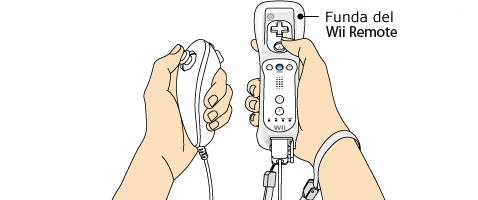
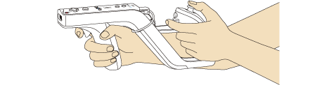
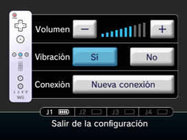
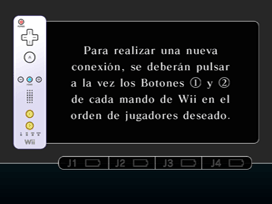

3 |
Preparación del control |
 |
Usa el control como se indica abajo para jugar este título. Nota: Para obtener más información sobre cómo ajustar la correa o la funda del Wii Remote, consulta el manual de operaciones de la consola Wii.


Al sujetar el Wii Zapper con las dos manos IMPORTANTE: Usa siempre la correa cuando uses el control Wii Remote. Consulta Precauciones de uso en la página 2. Nota: Consulta el manual de operaciones para aprender a usar cada tipo de control.
Este procedimiento te permitirá establecer la comunicación entre el control y la consola Wii. El Wii Remote incluido con esta consola Wii ya ha sido sincronizado con la misma. Existen dos métodos para sincronizar un control con la consola Wii. MODO NORMAL: El modo normal de sincronización se utiliza para conectar controles adicionales a la consola Wii o para volver a sincronizar el Wii Remote incluido con la consola Wii. Una vez sincronizado, el control permanecerá conectado a la consola Wii a menos que sobrescribas dicho ajuste al sincronizar el control con otra consola Wii. MODO ÚNICO: Este modo te permitirá usar el Wii Remote temporalmente en la consola Wii de un amigo, y que tus amigos puedan usar sus controles en tu consola Wii. No sobrescribirá el ajuste del modo normal guardado en el Wii Remote. En este modo, el control solo se comunicará con la nueva consola Wii mientras esté encendida. Al apagarla, el control dejará de estar sincronizado con la consola Wii. Nota: Solo un Wii Remote sincronizado en el modo normal puede encender o apagar la consola Wii. Sincronización en modo normal Nota: Asegúrate de que el Wii Remote tenga pilas.
Cuando se haya establecido la conexión, el indicador que señala el número del jugador permanecerá encendido. 
Debes seguir este procedimiento con cada Wii Remote adicional que conectes a la consola Wii. Sincronización en el modo único Nota: Este modo desactiva de forma temporal el ajuste de sincronización del modo normal para todos los controles hasta que se apague la consola Wii. Cuando se vuelva a encender la consola Wii, se restaurará la configuración del modo normal.


IMPORTANTE: Si el Wii Remote pierde la sincronización con la consola Wii y no puedes volver a sincronizarlo, revisa el apartado "Solución de problemas" del manual de operaciones de la consola Wii.
Si los botones o las palancas de un Nunchuk, Classic Controller o control de Nintendo GameCube se descalibran de la posición neutra* y dejan de funcionar correctamente, haz lo siguiente:
* La "posición neutra" de una palanca es aquella en la que la palanca no está inclinada. Si al encender la consola Wii estás inclinando sin darte cuenta la palanca, la consola Wii tomará como neutra la posición de la palanca en ese momento, lo que causará problemas de control durante el juego.
|

 |
 |
 |